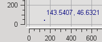
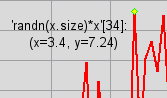
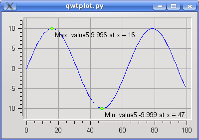
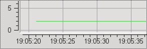

TaurusPlot User’s Interface¶
Contents
- TaurusPlot User’s Interface
- TaurusPlot as a Stand-alone application
- Working with two Y scales
- TaurusPlot context menu
- Zooming and panning
- Plot Configuration dialog
- Choosing what is plotted
- Storing and recovering current configuration
- Obtaining information about the plotted values
- Exporting and printing the data
- Customizing the titles of the curves
- Date/time support
The standard way for Taurus applications to show one-dimensional data is by
using a TaurusPlot widget.
TaurusPlot is shown as an area with X and Y axes where curves (data sets)
are plotted. It may also show a legend.

But the TaurusPlot does a lot more than just showing a plot. It allows
the user to interact with the plot in many ways as described below.
Note
The features described here are available by default in all TaurusPlot widgets, but certain GUIs may choose to disable some of these features.
TaurusPlot as a Stand-alone application¶
You may also use TaurusPlot as a stand-alone application for displaying
attributes from the control system or for plotting a function. You can launch the
stand-alone TaurusPlot with the following command:
taurusplot [options] [<model_list>]
Run the following command for more details:
taurusplot --help
The <model_list> is a space-separated list of models for TaurusPlot. Valid models are:
SPECTRUM attribute names or alias, and Xattrname|Yattrname constructions for indicating X-Y scatter plots.
See TaurusPlot API for more information about valid models
Working with two Y scales¶
A TaurusPlot has a X axis and one or two Y axes (left and right, also
called Y1 and Y2 and drawn in black and blue, respectively).
Multiple curves can be displayed simultaneously and each one will be associated
to either Y1 or Y2.
By default, TaurusPlot only shows a legend when more than one curve is displayed
(this behavior can be overridden using the TaurusPlot context menu).
Curves associated to the Y1 axis show their title in the legend using black text, while those associated to Y2 use blue text.
You can change the axis to which a curve is associated by clicking on its title in the legend. There are three states: associated to Y1 (black legend text), associated to Y2 (blue legend text), and hidden (the curve is not displayed and its title in the legend becomes gray).
You can also change the axis to which a curve is associated using the Plot Configuration dialog.
Zooming and panning¶
There are several ways of changing the scales interactively:
- The plots can be zoomed in and out by using the mouse wheel over the plot area.
- Zooming over selected areas is also possible by dragging a selection rectangle with the left button of the mouse. Right-clicking will go back to the previous selection. Note that, if both Y1 and Y2 axes are enabled, the zooming region will only affect the curves attached to one of the axes (the region selector will be black when the active axis is Y1 and blue when it is Y2). It is possible to change which Y axis is active for zooming by either using the ‘Z’ key, or via TaurusPlot context menu
- Panning (i.e. translating without scaling) is done by holding the CTRL key down while dragging with the left button of the mouse.
- The ESC key resets the zooms and returns to auto-scale mode.
- Finally, all details about the scales are accessible at the Plot Configuration dialog.
Plot Configuration dialog¶
This dialog can be accessed from the TaurusPlot context menu.
On its top section you can customize the look of the displayed data (line type, symbols used, colors, thicknesses, associated axis,...). Any changes will be automatically applied to all the curves selected from the list on the left.
The curve titles can be changed by editing them directly in the list (one by one) as well as by selecting some of them and using the Curve Title(s)... button.
On the bottom part you can control the scales for all axes (X, Y1 and Y2):
- custom scales. If the “Custom scale” check box is enabled for an axis, the range defined by the min and max values will remain fixed. If it is disabled, the axis will auto scale to accommodate all the data.
- Axis type: You can choose either Linear or Logarithmic scales. Note: non-positive points will be silently ignored when in logarithmic mode.
Choosing what is plotted¶
When TaurusPlot is used in a GUI, it is likely that some data is already plotted on
it. But, say that you want to compare it against some function, or against data
stored in a file, or even against some attribute of the control system...
...then the Input data selection option from the TaurusPlot context menu is for you!
From the Attributes tab of the import data dialog, you can choose which Tango attributes are plotted, thanks to a TaurusModelChooser widget.
If the data you want to plot is not an attribute, go to the Raw Data tab, where you can add data sets to the plot from the following sources:
- You can read it from a file (e.g., one that was created with the export to ASCII option from the TaurusPlot context menu)
- You can add it by entering a mathematical formula.
TaurusPlotwill recognize many common functions (it evaluates the formula using a subset of numpy expressions). You can use x as a dependent variable, which you can set as regular steps or using an arbitrary expression.
Note that there is actually no way to remove RawData curve from the GUI.
Storing and recovering current configuration¶
Once you have customized the way the plot looks (see the Plot Configuration dialog section), you may want to save the settings for later use. This can be done using the Save current settings option from the TaurusPlot context menu.
This will save which curves should be plotted and how they should look.
You can restore those settings at any point by using the retrieve current settings option from the TaurusPlot context menu.
Important: note that if you saved the settings of a plot which displayed an attribute from the control system, the actual values shown when restoring the settings will be updated with the attribute value
Obtaining information about the plotted values¶
Sometimes you want to know more about the values being plotted. The following features can be useful:
Obtaining coordinates of the plot area: you can get the coordinates (in the X-Y1 system) for any arbitrary point of the plot by simply clicking on it.
Data Inspector: you can inspect the value of any given data point by entering in Inspector mode. You can toggle this mode this by pressing the “I” key or via the TaurusPlot context menu (the cursor over the plot will change from the usual cross to something like this: , depending on the system). Once in data inspector mode, you can click on a data point, which will be marked and some information about it will be displayed:
Peak locator:
TaurusPlotcan locate and put a mark at the maximum and/or minimum points in the plotted data. You switch this option on and off using the Show min and Show max option from the TaurusPlot context menu or use from the Peak Markers option in the Plot Configuration dialogFinally, if you want to see a text list of all the data being plotted, you can also do it from the Export to ASCII Dialog from the TaurusPlot context menu
Exporting and printing the data¶
You want a figure for a logbook?
Or you want to store the plotted values in a file?
Then you will like the Export capabilities of TaurusPlot.
You can access them from the TaurusPlot context menu and for the moment they allow you to:
Print the plot.
Create a PDF from the plot. Note that it is not a simple screenshot, but a proper vectorial PDF (this means you can zoom in without loosing resolution).
- Export the data values to ASCII (you can edit before saving!):
This will save the data in plain ASCII text format. If the plot is showing more than one curve, you can choose between:
- saving a single curve in two-column mode
- saving all the curves in a single table-like file (this is only possible if the X data is the same for all curves)
- saving all curves to separate files in one go.
(note that you can also use this dialog to inspect the data and to copy it to the clipboard)
Customizing the titles of the curves¶
The titles of the curves (which are displayed in the legend) can be customised in several ways:
- Through the Change Curves Titles... option in the TaurusPlot context menu
- Through the Plot Configuration dialog (either editing the name individually, or selecting several curves and clicking on the Curve Title(s)... button)
Date/time support¶
In some applications, the values of the X axis are interpreted as date/time values (this is set either by the GUI using TaurusPlot, or by the -xt parameter if TaurusPlot is being launched from the command line).
In this mode, the values of the abscissas must be valid epoch numbers, i.e. seconds since the “beginning of times” (UNIX t=0 : 1970-01-01 01:00:00). TaurusPlot will interpret such values and display well-formatted dates and times instead of the epoch number:
When working in time mode, the X axis in the Plot Configuration dialog changes to “Time”, and the Min/Max entries change to Start/End, where you can enter a date (and, optionally a time).
Here are some tips for entering valid date/time values:
- For absolute date/times:
- The date can be written in various formats. ISO format is recommended (e.g. “1917-10-25”), although others like, e.g. “25/10/1917” are also accepted.
- The time is given in 24 hours format (e.g. “21:45”) and may optionnaly include seconds if given (e.g. “21:45:01”)
- Date is mandatory while time is optional. If time is given, it must be separated from the date with a single space (e.g. “1917-10-25 21:45:01”)
- For relative date/times.
- You can specify the date/time relative to the current time. Do this by using a “+” or “-” symbol, followed by a number and a time unit (valid time units are “s”, “m”, “h”, “d”, “w” and “y”). For example, the following are valid relative times: “-1d”, “+3w”, “- 3.6e3 s”. Note that the units are case-sensitive (e.g., “-1D” is not valid)
- also, the keyword “now” (case-insensitive) can be used as a synonym of “+0s”.
TaurusCurveDialog¶
Taurus also offers an alternative widget for plotting one-dimensional data:
TaurusCurveDialog. This widget is based on the guiqwt library and
is currently less developed and tested than :class`TaurusPlot`.
The TaurusCurveDialog widget can be launched as a stand-alone
application with the following command:
tauruscurve [options] [<model_list>]
Run the following command for more details:
tauruscurve --help